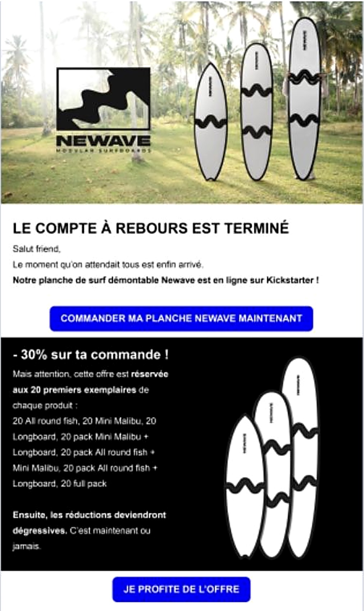

Newave Surfboards · start-up de surf · stage, 2025
La refonte de l'identité vers un positionnement premium était en cours à mon arrivée. J'ai contribué à la rendre visible et cohérente partout : site, réseaux sociaux, newsletters et supports. J'ai aussi rédigé des newsletters en français et en anglais, ouvertes par 20 à 25 % des abonnés, et mené une campagne TikTok Ads au Royaume-Uni : 100 615 impressions, 0,19 € par clic.
